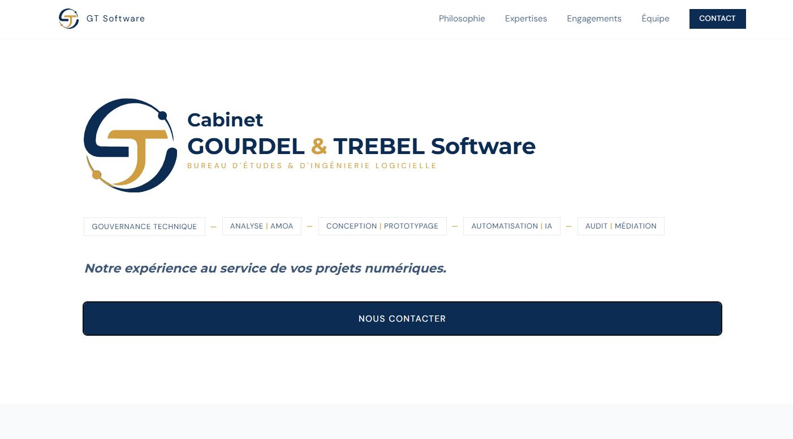
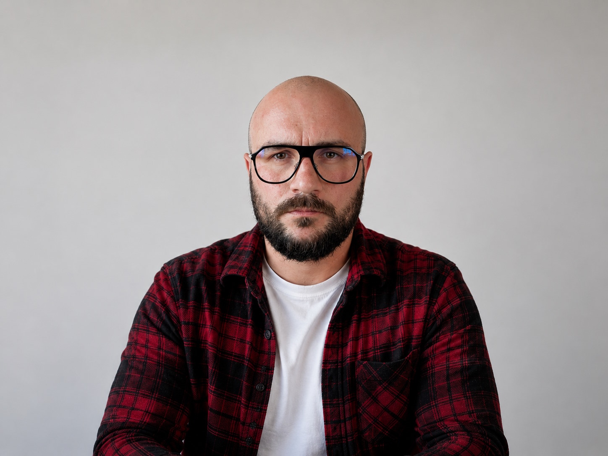
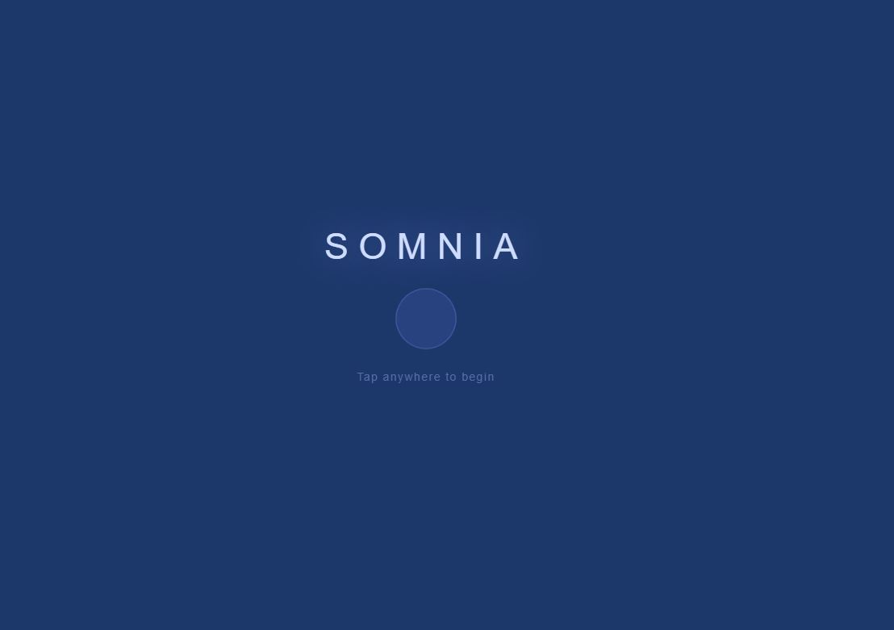
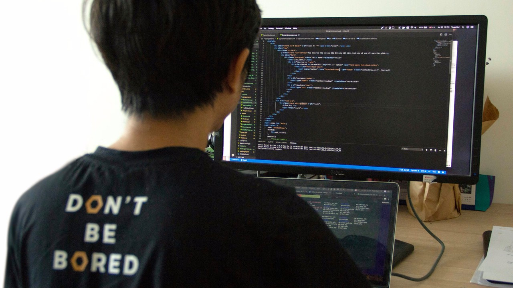

Cabinet Gourdel & Trébel Software
Le bureau d'études et d'ingénierie logicielle où je travaille.

Architecture Logicielle · Automatisation · Organisation technique
Je veux discuterDepuis presque 10 ans, j'évolue dans des environnements variés, au contact d'interlocuteurs aux métiers et aux enjeux très différents. Que ce soit pour résoudre des problèmes techniques pointus, concevoir des architectures complexes, ou gérer des dynamiques humaines et organisationnelles, j'ai toujours privilégié une approche pragmatique et orientée business. Mon expérience m'a appris à naviguer entre les défis haut niveau (stratégie, vision produit) et les détails concrets (code, performance, automatisation), avec un seul objectif : livrer des solutions qui fonctionnent, qui s'adaptent aux réalités du terrain, et qui créent de la valeur.
Ce qui me motive ? Comprendre les besoins réels, proposer des réponses adaptées, et accompagner les équipes pour transformer les idées en résultats tangibles. Que le projet soit technique, managérial ou les deux, je m'attache à allier rigueur et flexibilité, pour avancer efficacement sans perdre de vue l'essentiel : l'impact concret.
Ma phrase préférée
"ça dépend !"

Cabinet Gourdel & Trébel Software
Le bureau d'études et d'ingénierie logicielle où je travaille.

Un petit jeu sur mobile pour se détendre, relaxer et ralentir.
